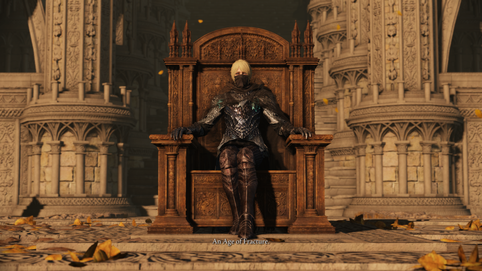

Lab 5.1 Web Page
This is my my second web page for Lab 4 of GIS 3410 at MSU Denver. I'm honestly quite surprised at how easy HTML is to understand.
The Fallen Leaves Tell a Story...
Of how a Tarnished became Elden Lord. In our home, across the fog, in the Lands Between, Our seed will look back look back upon us and recall an Age of Fracture.

Age of Fracture Ending
Photo from eldenring.wiki.fextralife.com
Elden Ring's Many Endings
Elden Ring is an open-world action adventure game produced by Fromsoftware. Above is the monologue heard in its Age of Fracture ending, which is only one of many. In total, there are 6, which includes:
- Age of Fracture
- Age of the Duskborn
- Age of Order
- Blessing of Despiar
- Lord of Frenzied Flame
- Age of the Stars
Requirements For Each Ending
| Ending | Requirement |
|---|---|
| Age of Fracture | Beat the Game Normally |
| Age of the Duskborn | Complete Fia's questline and for the Mending Rune of the Death-Prince |
| Age of Order | Complete Goldmask and Brother Corhyn's questline for the Mending Rune of Perfect Order |
| Blessing of Despair | Complete Dung Eater's questline for the Mending Rune of the Fell Curse |
| Lord of Frenzied Flame | Inherit the Frenzied Flame from the Three Fingers |
| Age of the Stars | Complete Ranni's questline |
For more information, Fextralife provides a good guide on getting all the endings.